【AI】再测--AMD AI MAX 395运行Qwen3.8-flash-next
之前写过一篇了【AI】AMD AI MAX 395运行qwen3.8-flash-next测试，
距离这个模型初发布，一个多月过去了，现在再来看看社区围绕这个模型在AMD AI MAX 395这个设备上做到了什么程度。
由于各种工具的更新几乎是按小时级进化，所以下面的测试只代表我当时测试的情况，不代表现在测也是这个表现。
20261006
一、unsloth desktop
https://unsloth.ai/
UD-Q4_K_XL 模型加载大概需要160S
PS C:\Users\xxxx\.lmstudio\models\unsloth\Qwen3.8-Flash-Next-GGUF> dir
目录:C:\Users\xxxx\.lmstudio\models\unsloth\Qwen3.8-Flash-Next-GGUF
Mode LastWriteTime Length Name
---- ------------- ------ ----
-a--- 2026/9/4 16:31 580038720 imatrix_unsloth.gguf_file
-a--- 2026/9/4 16:30 904004000 mmproj-F16.gguf
-a--- 2026/9/4 16:34 2786568256 mtp-Qwen3.8-Flash-Next-shared-Q8_0.gguf
-a--- 2026/8/28 16:46 10946624 Qwen3.8-Flash-Next-UD-Q4_K_XL-00001-of-00004.gguf
-a--- 2026/8/28 19:04 49859583136 Qwen3.8-Flash-Next-UD-Q4_K_XL-00002-of-00004.gguf
-a--- 2026/8/28 18:58 49376141504 Qwen3.8-Flash-Next-UD-Q4_K_XL-00003-of-00004.gguf
-a--- 2026/8/28 18:13 12087983520 Qwen3.8-Flash-Next-UD-Q4_K_XL-00004-of-00004.gguf
开了MTP 4 ,最大速度约40tok/s，但是速度很快会降到27tok/s，最严重的问题是预填充速度只有两百多tok/s
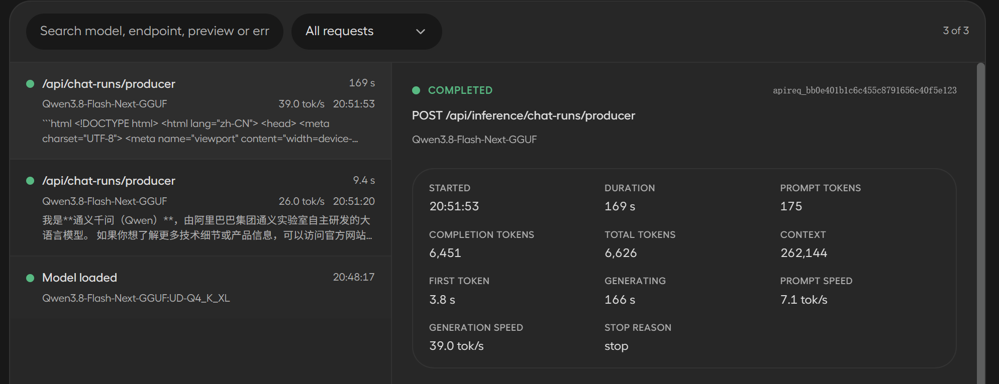
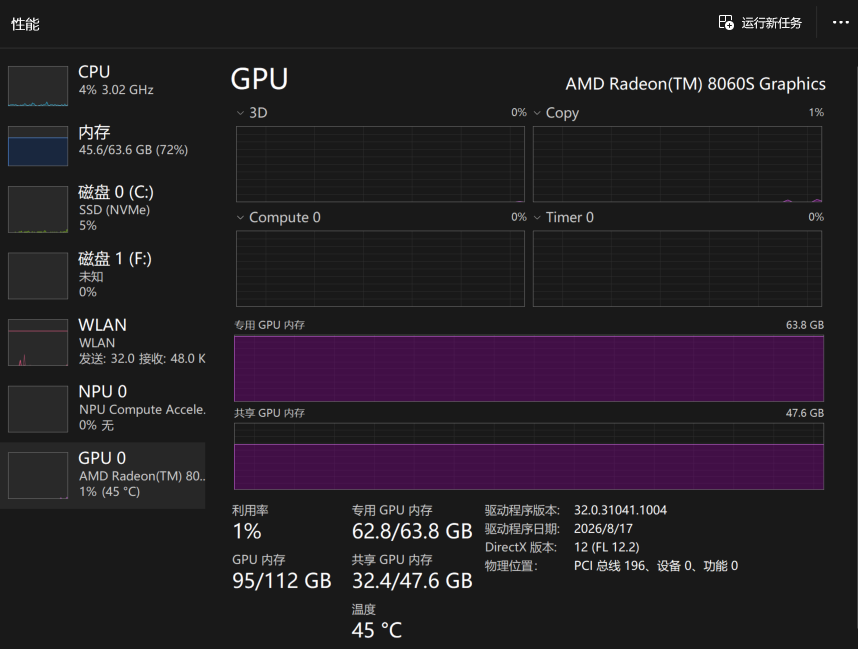
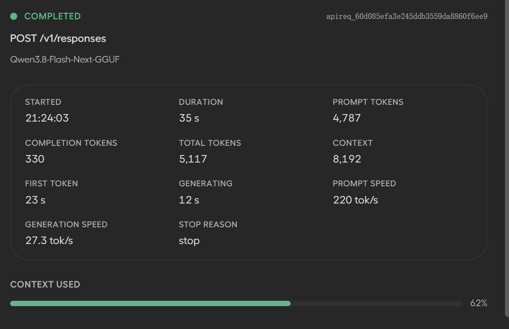
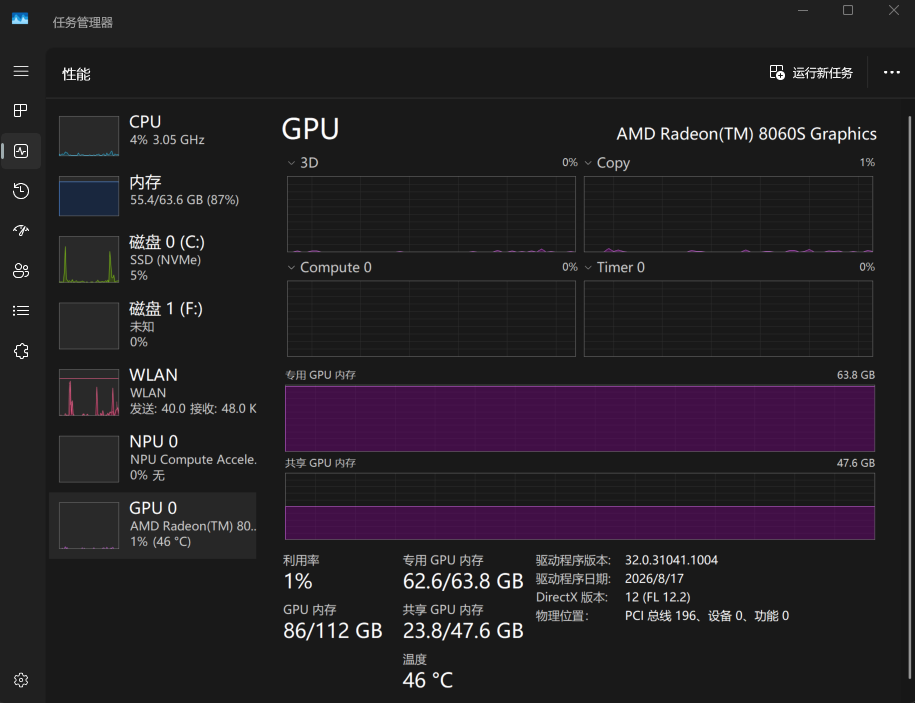
有个图没截上，工作状态时，CPU跑到50%了。
gfx1151-engine
https://github.com/IIIIIllllIIIIIlllll/gfx1151-engine
加载 qwen38-flash-next-w4b.hgn 大概30秒
S C:\work\github\gfx1151-engine\models> dir
目录:C:\work\github\gfx1151-engine\models
Mode LastWriteTime Length Name
---- ------------- ------ ----
d---- 2026/10/1 22:06 tokenizer
-a--- 2026/10/1 22:06 1523566720 qwen38-flash-next-mtp.hgn
-a--- 2026/10/1 22:06 897916416 qwen38-flash-next-vision.hgn
-a--- 2026/10/2 0:08 124068083904 qwen38-flash-next-w4b.hgn
-a--- 2026/10/1 22:34 2572466560 qwen38-flash-next-w4b.overlay.hgn
其实很明显，这个hgn专用模型参数文件的大小和unsloth 的UD-Q4_K_XL gguf大小差不多，但加载时间差这么多，这就是专属优化的优势。
最大decode 速度能跑到50tok/s ,但由于agent在同一台机器上，而且我还开了企业微信、微信、飞书、两个浏览器，再外加几个带前端的程序，所以不能随时保持最高性能,最低能到20+。不过最舒服的是平均预填充速度能过千，历史上最大到了1500tok/s 。实测在长下文的时候也基本不会掉速，不像llama.cpp速度衰减很快。
工具自带一个监控面板，挺好的：
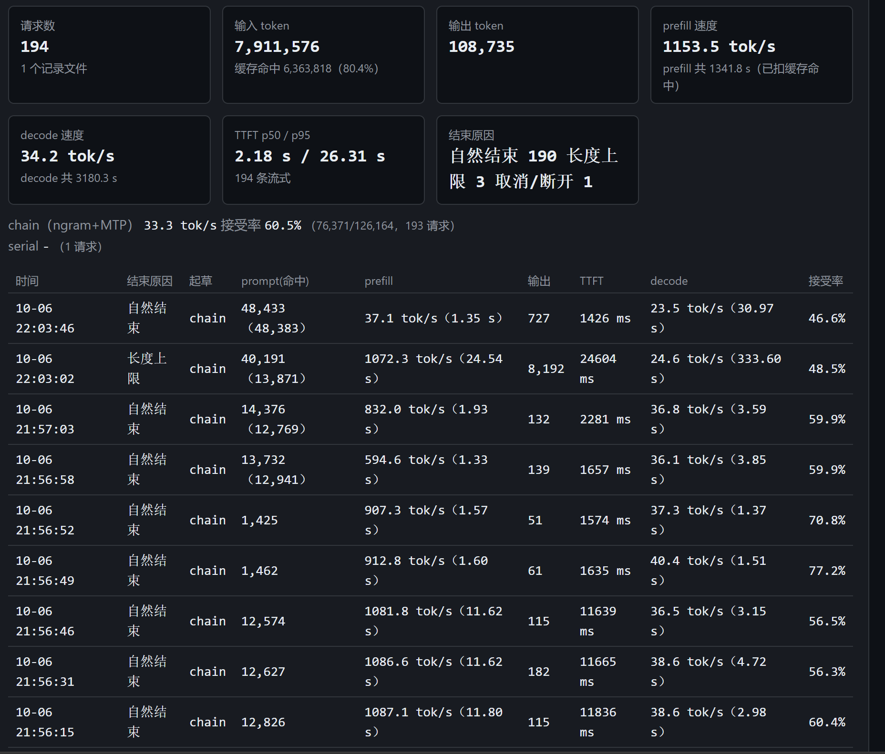
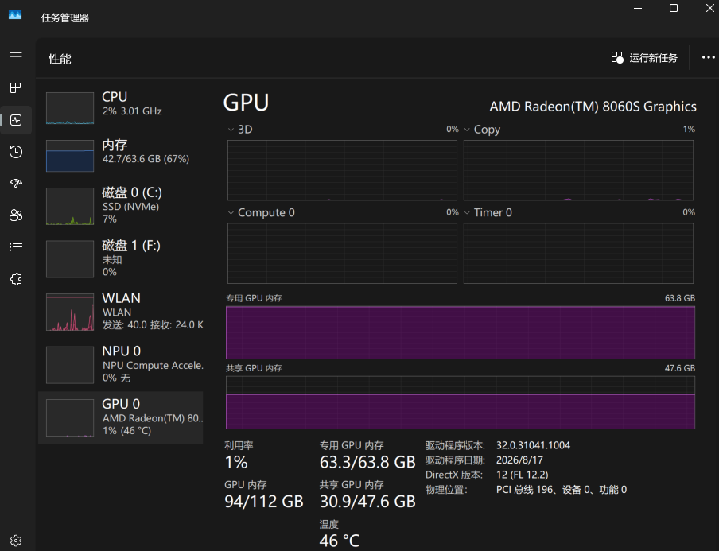
另外一点值得注意的是，这个引擎在工作时，是不占用CPU的，和目前的llama.cpp也不一样（图我没截）。
20261009
lmstudio
https://lmstudio.ai/
加载 UD-Q4_K_XL 143秒
虽然llama.cpp已经合入了qwen4exp的mtp代码，但是lmstudio还是没有兼容unsloth的这次新的mtp方案，所以lmstudio暂时还无法开启这个模型的mtp功能
026-10-09 16:21:01 [DEBUG]
17.38.759.581 I slot print_timing: id 1 | task 217 | prompt eval time = 684.91 ms / 25 tokens ( 27.40 ms per token, 36.50 tokens per second)
17.38.759.591 I slot print_timing: id 1 | task 217 | eval time = 747346.60 ms / 15542 tokens ( 48.09 ms per token, 20.79 tokens per second)
17.38.759.628 I slot print_timing: id 1 | task 217 | total time = 748031.52 ms / 15567 tokens
17.38.759.633 I slot print_timing: id 1 | task 217 | graphs reused = 15631
17.38.759.706 I slot release: id 1 | task 217 | stop processing: n_tokens = 15835, truncated = 0
2026-10-09 16:27:26 [DEBUG]
24.03.637.659 I slot get_availabl: id 0 | task -1 | selected slot by LRU, t_last = -1
24.03.637.822 I slot launch_slot_: id 0 | task 15762 | processing task, is_child = 0
2026-10-09 16:27:32 [DEBUG]
24.09.182.790 I slot print_timing: id 0 | task 15762 | prompt processing, n_tokens = 2090, progress = 0.16, t = 4.65 s / 448.99 tokens per second
2026-10-09 16:27:37 [DEBUG]
24.14.213.848 I slot print_timing: id 0 | task 15762 | prompt processing, n_tokens = 4138, progress = 0.32, t = 9.69 s / 427.22 tokens per second
2026-10-09 16:27:42 [DEBUG]
24.19.760.758 I slot print_timing: id 0 | task 15762 | prompt processing, n_tokens = 6186, progress = 0.48, t = 15.23 s / 406.10 tokens per second
2026-10-09 16:27:48 [DEBUG]
24.25.498.800 I slot print_timing: id 0 | task 15762 | prompt processing, n_tokens = 8234, progress = 0.64, t = 20.97 s / 392.64 tokens per second
2026-10-09 16:27:54 [DEBUG]
24.31.383.571 I slot print_timing: id 0 | task 15762 | prompt processing, n_tokens = 10282, progress = 0.80, t = 26.86 s / 382.86 tokens per second
2026-10-09 16:28:00 [DEBUG]
24.37.504.721 I slot print_timing: id 0 | task 15762 | prompt processing, n_tokens = 12295, progress = 0.96, t = 32.98 s / 372.84 tokens per second
2026-10-09 16:28:02 [DEBUG]
24.39.276.223 I slot print_timing: id 0 | task 15762 | prompt processing, n_tokens = 12807, progress = 1.00, t = 34.75 s / 368.56 tokens per second
2026-10-09 16:28:08 [DEBUG]
24.45.848.470 I slot print_timing: id 0 | task 15762 | n_gen = 100, tg = 20.25 t/s, tg_3s = 20.45 t/s
...
...
...
2026-10-09 16:52:58 [DEBUG]
49.35.017.738 I slot print_timing: id 0 | task 15762 | n_gen = 29222, tg = 19.56 t/s, tg_3s = 19.50 t/s
2026-10-09 16:53:01 [DEBUG]
49.38.029.062 I slot print_timing: id 0 | task 15762 | n_gen = 29278, tg = 19.56 t/s, tg_3s = 18.60 t/s
2026-10-09 16:53:04 [DEBUG]
49.41.044.132 I slot print_timing: id 0 | task 15762 | n_gen = 29337, tg = 19.56 t/s, tg_3s = 19.57 t/s
2026-10-09 16:53:07 [DEBUG]
49.44.048.438 I slot print_timing: id 0 | task 15762 | n_gen = 29394, tg = 19.56 t/s, tg_3s = 18.97 t/s
2026-10-09 16:53:09 [DEBUG]
49.46.461.309 I slot print_timing: id 0 | task 15762 | prompt eval time = 36431.52 ms / 12811 tokens ( 2.84 ms per token, 351.65 tokens per second)
49.46.461.320 I slot print_timing: id 0 | task 15762 | eval time = 1505501.92 ms / 29440 tokens ( 51.14 ms per token, 19.55 tokens per second)
49.46.461.322 I slot print_timing: id 0 | task 15762 | total time = 1541933.44 ms / 42251 tokens
49.46.461.323 I slot print_timing: id 0 | task 15762 | graphs reused = 44839
2026-10-09 16:53:09 [DEBUG]
49.46.462.613 I slot release: id 0 | task 15762 | stop processing: n_tokens = 42250, truncated = 0
prefill速度大概 350tok/s,decode 速度大概 20toks/s
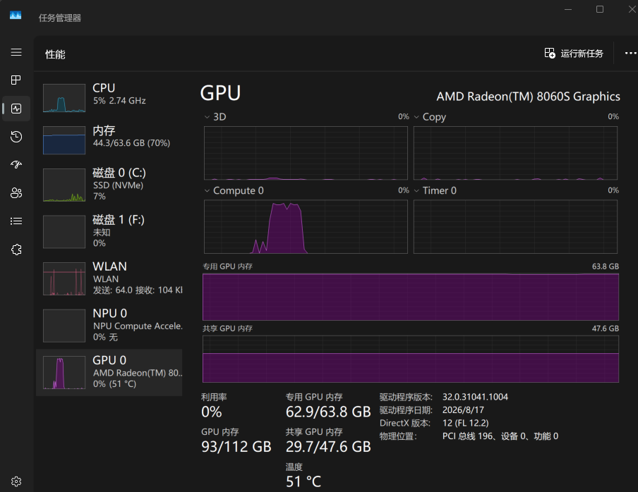
CPU同时也在跑，50%是因为32个逻辑CPU分了16个，全满载了，这个现象和unsloth desktop一样，因为都是用的llama.cpp
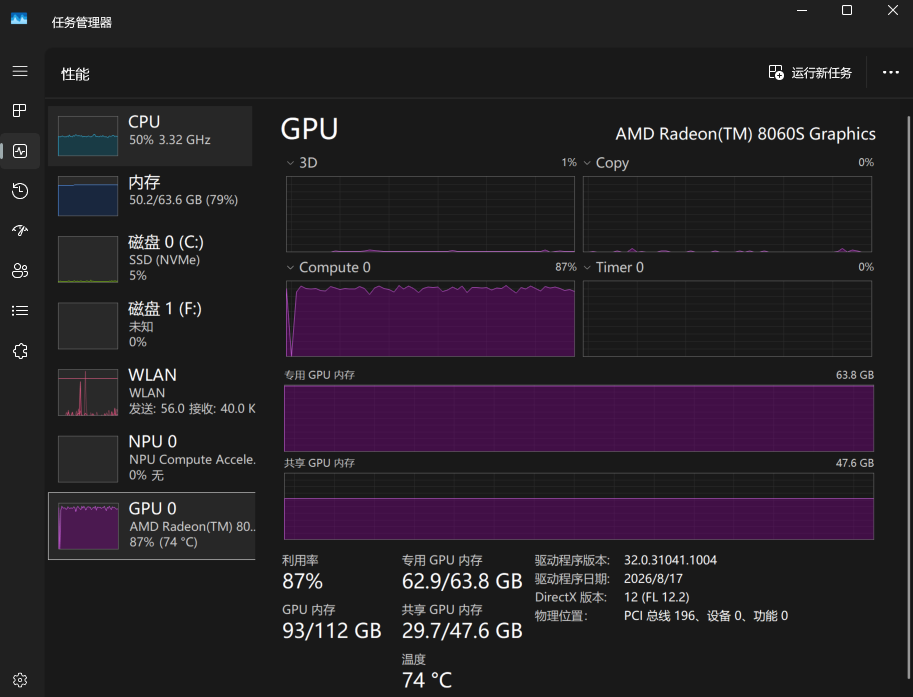
strata
https://github.com/Niko1221/Strata
最近strata也比较火，所以也拉过来测测。
它的文档推荐用ud-iq4_xs，不建议用UD-Q4_K_XL。
有点麻烦的是，strata除了基本的模型参数文件，还要下载一堆别的文件，好几GB，而且还依赖python环境，
启动日志里会有这么一段
=== Step 3: Python packages ===
C:\work\github\strata\Strata-main\.venv\Scripts\python.exe -m pip install --quiet --disable-pip-version-check numpy==2.5.3; python_version >= "3.12" numpy==2.4.6; python_version == "3.11" numpy==2.2.6; python_version < "3.11" jinja2==3.1.6 regex==2026.9.10 pyyaml==6.0.3 tqdm==4.70.1 requests==2.34.2 cmake==4.4.3 ninja==1.13.2 pillow==12.3.0 psutil==7.2.2 markupsafe==3.0.3 certifi==2026.7.22 charset-normalizer==3.5.1 idna==3.20 urllib3==2.8.0 colorama==0.4.6; sys_platform == "win32"
[ok] numpy, jinja2, regex, pyyaml, tqdm, requests, cmake, ninja, pillow, psutil installed
然后这一段暴露了其本质,本质上还是llama.cpp
=== Step 4: the Strata engine ===
llama.cpp source: 8.4 MB
[ok] llama.cpp source downloaded
[ok] llama.cpp 3cf0325 (gguf-py, ggml, mtmd)
由于我本地有模型文件，就单独写了个配置文件，以及手动启动脚本
{
"exe": "C:\\work\\github\\strata\\Strata-main\\engine\\strata.exe",
"args": [
"--pack",
"C:\\work\\github\\strata\\Strata-data\\packs\\unsloth-ud-iq4_xs",
"--native",
"C:\\Users\\xxxx\\.lmstudio\\models\\unsloth\\Qwen3.8-Flash-Next-GGUF\\Qwen3.8-Flash-Next-UD-IQ4_XS-00001-of-00003.gguf",
"--expert-profile",
"C:\\work\\github\\strata\\Strata-main\\data\\expert-profile.bin",
"--expert-cache",
"auto",
"--prefill",
"auto",
"--spec",
"4",
"--spec-min-p",
"0.5",
"--mtp",
"C:\\work\\github\\strata\\Strata-data\\mtp\\rt",
"--max-context",
"131072",
"--kv",
"int8",
"--kv-resident",
"32768",
"--resident-budget-gib",
"38"
],
"cwd": "C:\\work\\github\\strata\\Strata-main",
"tokenizer": "C:\\work\\github\\strata\\Strata-data\\packs\\unsloth-ud-iq4_xs\\tokenizer",
"model_name": "qwen3.8-flash-next-unsloth-ud-iq4_xs",
"log": "C:\\work\\github\\strata\\Strata-main\\strata-unsloth-ud-iq4_xs.log",
"lib_dirs": [
"C:\\work\\github\\strata\\Strata-main\\engine\\rocm\\bin"
],
"port": 8080,
"backend": "hip",
"env": {
"STRATA_HIPBLASLT_TUNING": "C:\\work\\github\\strata\\Strata-main\\tools\\hip\\gfx1151-hipblaslt-100500.txt"
}
}
PYTHONUNBUFFERED=1 ./.venv/Scripts/python.exe serve/server.py --engine strata --config C:/work/github/strata/Strata-main/strata-unsloth-ud-iq4_xs.json --port 8080
prefill阶段CPU和GPU一起跑 ，全部拉爆到100%，270tok/s，
decode阶段只有GPU跑,25~45 tok/s波动
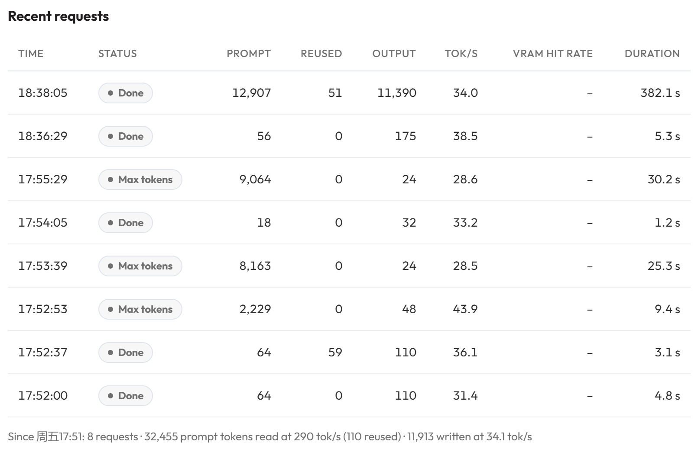
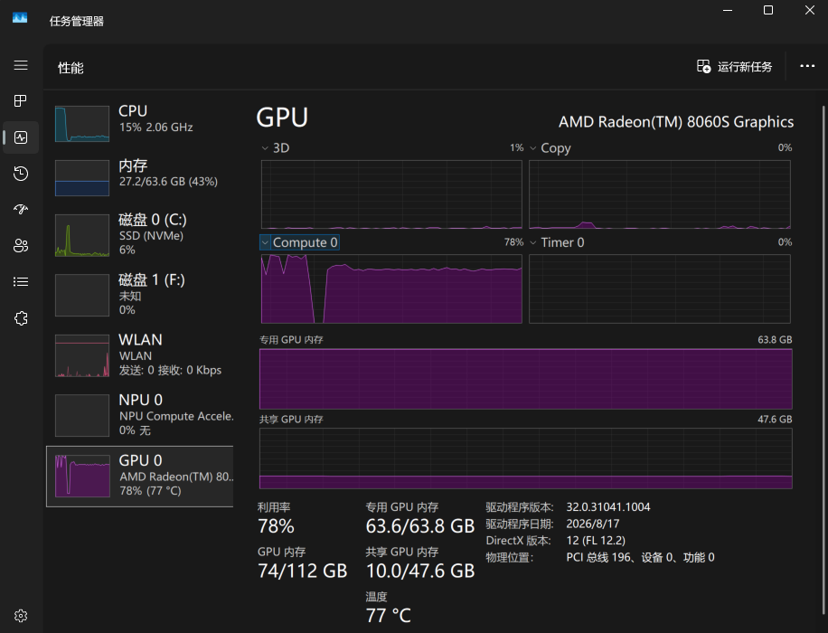
然后我又试了下加载 UD-Q4_K_XL ，加载72秒
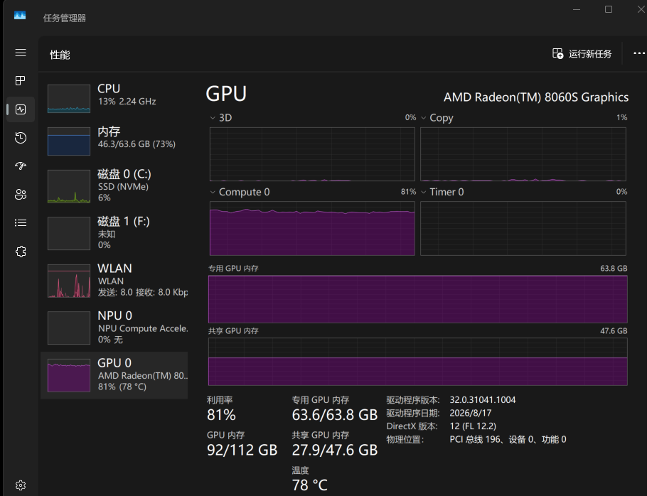
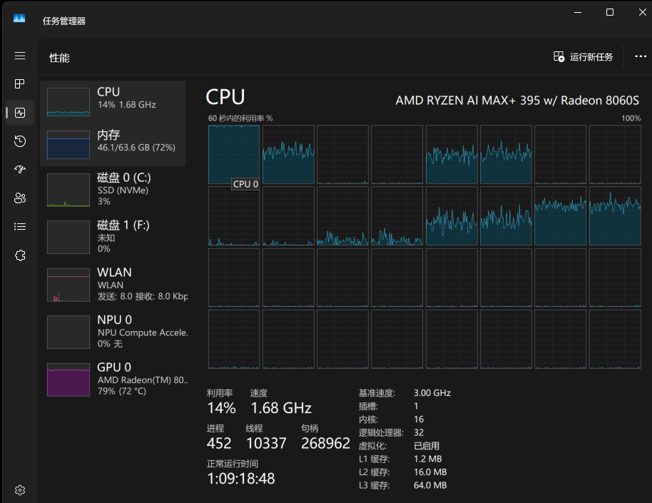
速度拉了，decode仅比lmstudio（即llama.cpp不开mtp）快点，而prefill是这几个工具里最慢的。
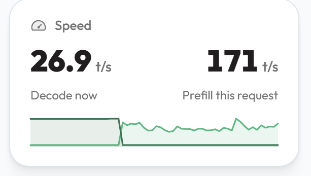
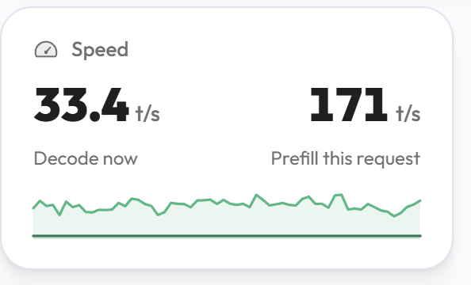
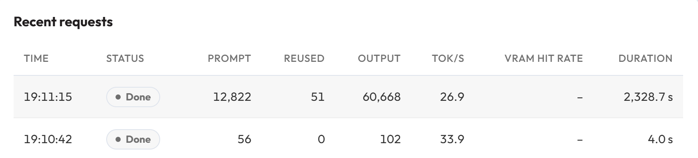
不过，根据社区实测情况来看，如果你有一块独立显卡，只要显存有个十几GB以上，在Linux上，strata也能跑出不错的速度。
gufo
https://github.com/gufo-org/gufo
这也是最近比较热门的一个引擎,不过原始仓库暂不支持windows，支持windows的版本放在别的仓库下了，而且最近也有了预编译版本。
https://github.com/pixmaate/gufo/releases/tag/windows-2026-10-03
双击start.cmd就可以启动，会自动扫描本机的lmstudio模型目录，实测加载UD-Q4_K_XL只要30秒
Qwen3.8 Flash Next UD-Q4_K_XL
C:\Users\xxxx\.lmstudio\models\unsloth\Qwen3.8-Flash-Next-GGUF\Qwen3.8-Flash-Next-UD-Q4_K_XL-00001-of-00004.gguf
1 [x] Speculative decoding MTP: mtp-Qwen3.8-Flash-Next-shared-Q8_0.gguf
2 [x] Prompt lookup drafts copied from the context; big win on code edits
3 [x] Survival stopping stop a draft chain once it is unlikely to be accepted
4 [ ] Latin draft vocabulary RECOMMENDED for English: ~5% faster, output identical
5 [x] Images (vision) mmproj-BF16.gguf
6 [x] Thinking reasoning before the answer (clients can still turn it off per request)
7 Context 32K tokens per request (press 7 to change)
8 [ ] Open to the network this PC only (127.0.0.1)
~83.8 GiB of GPU memory: spills
Enter = start B = back D = show the command Q = quit
port 8080 is taken by python (PID 47888), using 8081
Qwen3.8 Flash Next UD-Q4_K_XL: MTP, survival, lookup, vision, 32K context, thinking on
"C:\work\github\gufo-windows-2026-10-03\bin\gufo.exe" serve --host 127.0.0.1 --port 8081 --sessions 1 --max-request-bytes 33554432 llm --model C:\Users\xxxx\.lmstudio\models\unsloth\Qwen3.8-Flash-Next-GGUF\Qwen3.8-Flash-Next-UD-Q4_K_XL-00001-of-00004.gguf --served-model-name flash-next --context 32768 --max-output-bytes 8388608 --think on --temperature 1 --top-p 0.95 --top-k 20 --min-p 0 --speculative mtp --mtp-model C:\Users\xxxx\.lmstudio\models\unsloth\Qwen3.8-Flash-Next-GGUF\mtp-Qwen3.8-Flash-Next-shared-Q8_0.gguf --mtp-policy survival --prompt-lookup --mmproj C:\Users\xxxx\.lmstudio\models\unsloth\Qwen3.8-Flash-Next-GGUF\mmproj-BF16.gguf
OpenAI API: http://127.0.0.1:8081/v1 model "flash-next" (ready at event=listening; Ctrl+C stops)
2026-10-10 00:03:14 [INFO] [loader] event=load_started kind=text artifact=C:\Users\xxxx\.lmstudio\models\unsloth\Qwen3.8-Flash-Next-GGUF\Qwen3.8-Flash-Next-UD-Q4_K_XL-00001-of-00004.gguf rss_mib=32 host_available_mib=45118
2026-10-10 00:03:44 [INFO] [loader] event=load_completed kind=text elapsed_ms=29572 model=flash-next sessions=1 context_tokens=32768 speculative=mtp draft_limit=7 disk_cache=off rss_mib=20849 host_available_mib=21303 gpu_device_used_mib=85111 gpu_device_total_mib=109277
2026-10-10 00:03:44 [INFO] [server] event=listening address=http://127.0.0.1:8081 auth=off max_connections=16 max_body_bytes=33554432
GPU利用率峰值能到100%，同时CPU动静也不大
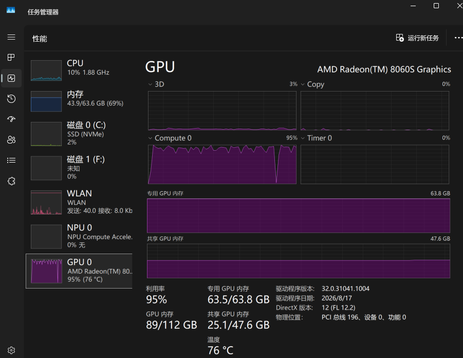
短提示词，decode_tps=48.6
2026-10-10 00:33:22 [INFO] [http] request=r23 event=completed method=POST path=/v1/chat/completions status=200 duration_ms=174214.6 outcome=completed prompt_tokens=206 prefill_tokens=25 generated_tokens=8440 finish=stop cache=memory cached_tokens=181 cache_restore_ms=0.0 queue_depth=1 resident_at_admission=1 queue_ms=4.8 ttft_ms=401.6 prefill_tps=63.1 decode_tps=48.6 batch_width=1 plan=serial-c1 draft_accepted=6729 draft_proposed=8239 acceptance_pct=81.7 lookup_accepted=293 lookup_proposed=503 cache_snapshot_bytes=251467180 rss_mib=21594 host_available_mib=20319
长提示词， prefill_tps=860.0 decode_tps=34.4
2026-10-10 00:37:42 [INFO] [http] request=r24 event=received method=POST path=/v1/chat/completions body_bytes=8697
2026-10-10 00:46:11 [INFO] [http] request=r24 event=completed method=POST path=/v1/chat/completions status=200 duration_ms=509268.4 outcome=completed prompt_tokens=3229 prefill_tokens=3229 generated_tokens=17355 finish=stop cache=miss cached_tokens=0 cache_restore_ms=0.0 queue_depth=1 resident_at_admission=1 queue_ms=24.8 ttft_ms=3856.6 prefill_tps=860.0 decode_tps=34.4 batch_width=1 plan=serial-c1 draft_accepted=10558 draft_proposed=14525 acceptance_pct=72.7 lookup_accepted=415 lookup_proposed=624 cache_snapshot_bytes=415880308 cache_miss_reason=prefix_changed common_prefix_tokens=45 nearest_checkpoint_tokens=181 rss_mib=15689 host_available_mib=20512
再测了几组，prefill 能到1000 ，decode 34~38
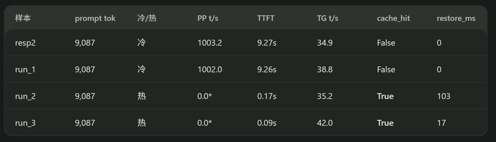
虽然依旧没达到它官方宣称的速度，但这个gufo也非常能打了！
gufo官方指标： 1,700.52 tok/s pp; up to 60.39 tok/s tg single user and 162.98 aggregated tok/s on 8 concurrent requests with MTP
其他调研
下表是我用AI在网上调研出来的ai max 395 使用各种引擎跑qwen3.8-flash-next的情况，供参考
| 引擎 | 量化 | PP @8k | TG @8k | TG @256k |
|---|---|---|---|---|
| llama.cpp HIP stock | UD-IQ4_XS | 145.7 | 11.15 | — |
| llama.cpp HIP + 官方 STRIX_LEAN | 98.49GB | 385 | 22.87 | 10.46 |
| llama.cpp HIP + hipCUB/native TOP_K | ROCmFP4 | — | 47.1 | — |
| halogen | .hgn 5.53bpw | ~1,517 | 37.6（greedy） | — |
| gfx1151-engine | .hgn/GGUF | 1,730–1,750 | ~34（投机 50–51） | 投机仍 50–51 |
| gufo | GGUF+DFlash2 | 1,628 | — | 最高 59（重复文本） |
| lucebox（395+R9700） | — | 1,820 @16k | 75 | — |
还有三款 128GB 融合内存设备的对比
| 平台 | 引擎 | 量化 / 精度 | 上下文口径 | Prefill t/s | Decode t/s | 来源与口径备注 |
|---|---|---|---|---|---|---|
| AI Max+ 395 | gfx1151-engine（手写 HIP，专用） | 5.53 bpw 级高保真 | 8,192 | 1,730–1,750 | 标准 ~34；投机（greedy drafting）50–51 | 高保真档牺牲 ~16% 生成速度；router/expert 放 DRAM 压缩精度 + kernel 直接取 |
| 同上 | 同上 | 同上 | 128K | ~1,650 | — | 同一 README 曲线 |
| 同上 | 同上 | 同上 | 256K | 1,580–1,590 | — | 同上 |
| AI Max+ 395 | halogen（gfx1151 专用构建） | 5.53 bpw 有效 | 8,192 → 131,072 全段 | 1,517–1,584 | 34.1–56.3（greedy 基线 ~37.6） | 100k 上下文的续问 ~2 s（自带缓存）；完整基准让人去 Discord 报数，未公开 |
| AI Max+ 395 | gufo（官方 Linux，gfx1151+128GB） | UD-Q4_K_XL + shared-Q8_0 MTP | pp2048 / depth 0 | 1,628.5（无 MTP） ~1,600（MTP） | 26.0（无 MTP） | 2026-09-23 BENCHMARKS.md |
| 同上 | 同上 | 同上 | 32K | 1,421.9 | 24.3 / MTP mixed 30.7 | 同上 |
| 同上 | 同上 | 同上 | 131K | 1,292 | 21.9 / MTP mixed 28.1 | 同上 |
| 同上 | 同上 | 同上 | 重复性负载 MTP | — | 59.4 / 46.8 / 42.3（0 / 32K / 131K） | 与 rep 相关，不能当通用值 |
| AI Max+ 395（你的 Windows 机器，昨天我实测） | gufo windows-2026-10-03 + MTP survival | UD-Q4_K_XL + MTP-Q8_0 | 9,087 tok 冷提示 | 1,002–1,003（4 次复现，抖动 <0.15%） | 34.9–42.0 | thinking on、max_tokens 60；命中 checkpoint cache 时 TTFT 9.26s → 0.09s（此时 pp/s 报 0，不能计入） |
| AI Max+ 395 | llama.cpp HIP/ROCm（fork） | UD-Q4_K_XL | 8,192 | ~385 | 修 top_k 前 16.8 → 修后 ~47 | 未修前 ggml_top_k 在 ne>1024 回落 CPU，QSA indexer 每 token 跑 12 次 |
| AI Max+ 395 | llama.cpp ROCm | 同上 | pp512 | 351.6 | MTP 开 ~33 | MoE4All 报告里的同机对照 |
| AI Max+ 395 | MoE4All（Vulkan，无 ROCm）v0.5.2 | Qwen3.8 全驻留 74 GB | pp512 / tg128 | 411.7 | 19.1 | Linux/RADV 25.2.8；bf16 coopmat 不可用；0.6~0.9 未在 395 复测 |
| AI Max+ 395 | llama.cpp ROCm | UD-IQ1_S | 未给 | ~200–300 | ~20 | HF 讨论区社区自报，参数缺失 |
| DGX Spark | vLLM NVFP4 + QWEN4EXP_PLE_MMAP=1/PLE_STAGED=1（blazux recipe，v0.31.0，dense 层 hybrid fp8-e4m3） | NVFP4 | 8,192–32,768 | 2,700–4,000 | — | 单台 GB10；需 9 个 overlay 补丁 |
| DGX Spark | vLLM NVFP4（ai-muninn） | NVFP4 | 32K | 1,666（另一档 1,269） | — | 表从 NVMe 经 mmap 供 |
| DGX Spark | vLLM（MiaAI 单台） | NVFP4 | — | 2,366 | c=1 37；聚合 162.9 | 权重 ~130 GiB 落盘，KV_TARGET_GIB=20；多模态下 MTP 退化 |
| DGX Spark | vLLM / NVIDIA forum recipe | NVFP4 | 编码/JSON 负载 | — | 43–47.5（代码）/ 60（JSON）；1/2/4 台峰值单流 64 | 单机 ~43 t/s 编码是社区共识值 |
| DGX Spark | llama.cpp | UD-IQ1_S | pp2k / tg128 | 797.76 | 34.54 | kubesimplify 实测 |
| DGX Spark | llama.cpp | UD-Q4_K_XL | 262,144，--parallel 1 强制 | 未测 | 19–22（密集负载 ~45） | -ot per_layer_token_embd=CPU + -lm mmap + -ngl 999 + KV f16，无 MTP |
| DGX Spark | SGLang TP2 + MTP | NVFP4 | 100K 深度 | — | 31（c=1） | TP2 = 两台 Spark |
| Mac M5 Max 128 GB | MTPLX 2.12.0 | 动态 4bit + QSA 投影保 8bit | 4,061 tok 提示 | 1,453（加 5 个 prompt kernel 后更高） | 74.1 | thinking off / 512 tok / 风扇拉满 / 单流 / GPU 预算手动提到 120 GiB（默认 ~96 GiB） |
| 同上 | 同上 | 同上 | 65,502 tok | 1,094（2.11.3 只有 768） | 63.5 | 2.12.0 把每轮 verify 的整份 KV 拷贝改成原地写 → +13% |
| 同上 | 同上 | 同上 | 16,376 / 65,529（新 kernel 配对跑） | 1,695 / 1,548 | — | TTFT 11.3→9.7 s / 46.6→42.6 s；峰值内存两边同为 92.0 GB |
| 同上 | MTPLX 2.11.3 | 同上 | 9k 代码提示 | — | 79.3 | 2.11.2 同机 62.5（+27%） |
| 同上 | MTPLX 2.11.3 | 同上 | 109k / 200k | — | 61.8 / 50.3 | 两条都是两次均值 |
| 同上 | MTPLX 2.11.3 | 同上 | 18,539 tok 提示中 18,364 命中 cache | — | 125.8 | 一次 OpenCode 请求，最快样本；含 cache 命中，不代表裸速 |
| 同上 | MTPLX 2.10.1 | 同上 | 131K | 810（block-sparse prefill） | — | 262,144 tok 冷提示 355 s 跑完，峰值 87.4 GB |
| Mac M5 Max 128 GB | mlx-serve 26.9.3（其自测同机对打） | MLX | 短提示 / ~16K | 未给 | 精确默认 92.5 / 82.4；同机 MTPLX 精确 102.0 / 90.9 | llmprobe 0.6.7，temp 1.0/top-p 0.95，depth 3，三次样本；mlx-serve 的 Typical 0.2/TokenV3 到 106.3/106.5 但自称不保证分布精确 |
| Mac M4 Max 128 GB | mlx-serve 26.9.3 官方 release 表 | mixed 4-8bit（26.8.11 起） | 自家代码补全提示 | 未发布 | 80 | 只测这一台机器，temperature 0 + MTP 强制开，三次中位数 |
| 同上 | mlx-serve 26.8.11（HF 包卡） | 同上 | 同机 | — | ~60 串行 / 78 开 MTP | — |
| Mac M4 Max 128 GB Studio | oMLX（Lightning MTP，draft=6） | oQ 4bit gs64 | 5,999 tok 序列任务 | 215–220（15,416 tok 提示，TTFT 70–72 s） | 83.06 | temp 0 / seed 12345 / thinking off / chunked_prefill=false / balanced prefill / memory guard 自定义 120 GB。作者标注：这是"新鲜态受控测量"，跑完整 suite 后退化到 69.14 / 53.74 / 62.72 |
| Mac M5 Ultra 256 GB Studio | oMLX | oQ4e-mtp | 6,000 tok 提示读入 / 64K–256K 上下文 | ~1,700 | >100（短）；60–85（64K–256K） | 实测横评；比 M3 Ultra 生成平均快 ~70%、prefill 平均 +150%；作者结论 5-bit 是甜点 |
| Mac M1 Ultra 128 GB Studio | llama.cpp（Metal/BLAS graph-kernel 分支，-lm mmap） | UD-Q8_0 | 100,000 | 465.45 | 35.28 | tarruda 自报，llama-bench 口径（-p 512 -n 128，深度 10k–30k 扫描，-t 16） |
| 同上 | 同上 | 同上 | 200,000 | 309.67 | 28.16 | 作者称 decode 基本不掉 |
| 同上 | llama.cpp stock | UD-IQ1_S | ~未给 | ~400 | ~20 | 8/26 首发报告 |
| Mac M5 Max 64 GB | llama.cpp AD-4.27bpw-Q4_K_M-M64 | 4.27 bpw | pp512 / tg128 | 517.9 | 36.0 | 必须 sudo sysctl iogpu.wired_limit_mb=57344，-fit off，mmap 保持开 |
| Mac M1 Max 64 GB | llama.cpp AD-3.84bpw-IQ4_XS-M64（45.8 GB 驻留 + 39.1 GB 留 SSD） | 3.84 bpw | pp512 / tg128，-c 32768 | 181.7 | 17.6 | wired 峰值 46.6 GiB + swap 23 GB |
只看最高指标的排名：
prefill : DGX SPARK (2700) > AI MAX 395 (1750) ≈ MAC M5 MAX (1700)
decode : MAC M5 MAX (125) > DGX SPARK (64) > AI MAX 395 (59)
基本上可以这么判断，decode性能是完全靠内存带宽撑起来的，prefill性能则要看芯片设计和引擎的适配。虽然AI MAX 395在这三个设备中，仍然近乎垫底，但差距和第2并不大，而且还是唯一的x86_64设备，对windows生态天然友好，价格还最便宜。不过我目前仍然不建议仅仅基于想跑本地大模型而入手这个设备，因为二手独显服务器会更便宜且性能更好。
总结
综合这一阵子的测试结果，意外的发现，windows+ai max 395跑qwen3.8-flash-next，获得最佳表现反而是非专业人员用claude开发的 gfx1151-engine （可以说连个正经的项目名字还没起）。另外由于我目前没有AI MAX 395的LINUX环境，以上测试不代表LINUX上的效果，据我目前所见，社区上基本上是把halogen-flash-server视为了最佳（不过最近gufo的热度也在起来）。而gfx1151-engine就是参考了halogen-flash-server的一个windows实现。
如果已经下载了qwen3.8-flash-next的gguf参数文件，不想再额外下载一百多GB的hgn文件，建议就用gufo，因为gfx1151-engine在windows上还不支持读gguf,只能读halogen的hgn文件。
在qwen4的下一个模型正式发布之前，qwen3.8-flash-next目前应该是最有性价比的真正可用的本地部署LLM了，个人认为没有之一。